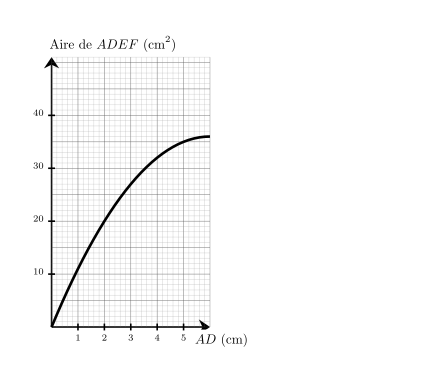
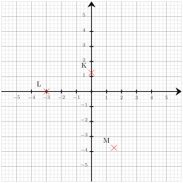

Tania lit sur sa recette de cake pour $3$ personnes qu'il faut $60$ g de farine. Elle veut adapter sa recette pour $5$ personnes. Quelle masse de farine doit-elle prévoir ?
Commençons par trouver la masse de farine pour une personne. $3$ personnes, c'est ${\color{#C5607A}\boldsymbol{3}}$ fois $1$ personne. il faut donc ${\color{#C5607A}\boldsymbol{3}}$ fois moins que $60$ g pour $1$ personne. $60$ g $\div {\color{#C5607A}\boldsymbol{3}} = 20$ g il faut ${\color{#C5607A}\boldsymbol{20}}$ g de farine pour $1$ personne. Cherchons maintenant la quantité nécessaire pour 5 personnes. $5$ personnes, c'est ${\color{#C5607A}\boldsymbol{5}}$ fois $1$ personne. Donc, il faut ${\color{#C5607A}\boldsymbol{5}}$ fois plus que 20 g de farine que pour $1$ personne pour faire sa recette. ${\color{#C5607A}\boldsymbol{20}}$ g $\times {\color{#C5607A}\boldsymbol{5}} = 100$ g
Tania doit utiliser ${\color{#8B3C52}\boldsymbol{100}}$ g de farine pour $5$ personnes.
03
Question
Donner le nom de chacun des solides.
Sphère.
04
Question
$NOP$ est un triangle rectangle en $N$ dans lequel
$NO=3$ et $NP=\sqrt{10}$.
Calculer la valeur exacte de $OP$ .
On utilise le théorème de Pythagore dans le triangle $NOP$, rectangle en $N$.
On obtient :
$\begin{aligned}
OP^2&=NO^2+NP^2\\
OP^2&=\sqrt{10}^2+3^2\\
OP^2&=10+9\\
OP^2&=19\\
OP&={\color{#8B3C52}\boldsymbol{\sqrt{19}}}
\end{aligned}$
01
Question
Quel est le carré de $13$ ?
Le carré d'un nombre est ce nombre multiplié par lui-même : $13\times13=169$
02
Question
Sur le graphique ci-dessus, on a représenté la relation entre la longueur $AD$ et l'aire du rectangle $ADEF$. Quelle est la longueur $AD$ lorsque l'aire du rectangle $ADEF$ vaut $10\text{ cm}^2$ ?

On cherche $AD$ tel que $Aire_{ADEF} = 10\text{ cm}^2$.
On trouve $AD=0{,}9\text{ cm}$.
Sur la figure ci-dessus, dans le triangle $PIK$, les droites $(IK)$ et $(TY)$ sont parallèles. Déterminer la longueur $PI$.
Dans le triangle $PIK$, les droites $(IK)$ et $(TY)$ sont parallèles.
D'après le théorème de Thalès, on a :
$\dfrac{PI}{PY} =
\dfrac{IK}{TY}$.
En remplaçant par les longueurs, on obtient :
$\dfrac{PI}{PY} = \dfrac{18}{12}=1{,}5$.
On en déduit que :
$PI = 1{,}5 \times 36 = {\color{#8B3C52}\boldsymbol{54}}$ cm.
01
Question
Écrire sous la forme de la somme d'un nombre entier et d'une fraction inférieure à 1 puis donner l'écriture décimale. $ \dfrac{5}{4} = \phantom{00}\text{........}\phantom{00} + \dfrac{\phantom{00}\text{........}\phantom{00}}{\phantom{00}\text{........}\phantom{00}} = \phantom{00}\text{........}\phantom{00} $
$C=(-7z+8)\times (-11z)$ $C={\color{blue}\boldsymbol{-11z\times (-7z)+(-11z)\times 8}}$ En réduisant l'expression, on obtient : $C=$ ${\color{#8B3C52}\boldsymbol{77z^2-88z}}$.
03
Question
Déterminer les coordonnées respectives des points $L$, $K$ et $M$

Les coordonnées respectives des points sont : $L({\color{#8B3C52}\boldsymbol{-3}};{\color{#8B3C52}\boldsymbol{0}})$, $K({\color{#8B3C52}\boldsymbol{0}};{\color{#8B3C52}\boldsymbol{1{,}25}})$ et $M({\color{#8B3C52}\boldsymbol{1{,}5}};{\color{#8B3C52}\boldsymbol{-3{,}75}})$
04
Question
Dans le triangle $EFG$ rectangle en $E$, $FG=13\text{ m}$ et $\widehat{EFG}=43^\circ$. Calculer $EF$ à $0,1\text{ m}$ près.
Dans le triangle $EFG$ rectangle en $E$, le cosinus de l'angle $\widehat{EFG}$ est défini par : $\cos\left(\widehat{EFG}\right)=\dfrac{EF}{FG}$. Avec les données numériques : $\dfrac{\cos\left(43^\circ\right)}{\color{red}{1}}=\dfrac{EF}{13}$
$EF=13 \times \cos\left(43^\circ\right)$ soit $EF\approx{\color{#8B3C52}\boldsymbol{9{,}5}}\text{ m}$.